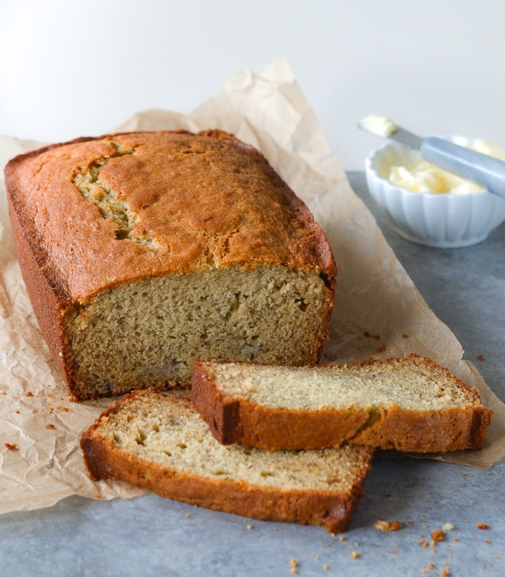

Banana Bread

Description
This is a really lovely banana bread recipe
Ingredients
- 2 cups plain flour
- 3/4 cup brown sugar
- 1/2 cup butter
- 2 large eggs
- 1 cup mashed overripe bananas
Steps
- Preheat the oven to 350F. Lightly grease a 9x5-ince loaf pan
- Put flour in a large bowl. Beat brown sugar and butter with a mixer in a separate bowl.
- Stir in eggs and bananas. Pour into the prepared loaf pan
- Bake in preheated oven for about 60 minutes